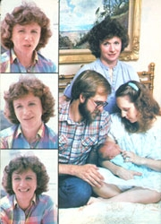

HOME BIRTH UNDER SIEGE
Last Mother's Day, a dedicated but grim assemblage of physicians, midwives, nursing mothers, and other parents gathered in Washington, D. C. And whereas most birth activist groups are upbeat educational organizations, the individuals assembled for the D. C. conference had come simply to fight . . . to protect the rights of those who want to have, or participate in, home births.
This organization, the Alternative Birth Crisis Coalition, was formed in 1981 . . . in response to what its members perceived as a recent nationwide increase in the persecution (and prosecution) of people involved in out-of-hospital delivery of babies. And anyone who attended the May ABCC gathering (and listened to the accounts of doctors who've lost their medical licenses, attendants who've been accused of infant murder, and parents who've had their newborn children taken away from them) soon realized that the birth-at-home option is being attacked by powerful societal forces . . . and that this small coalition of parents' rights advocates is going to have its hands full trying to halt the growing trend toward compulsory hospitalization in this country.
The moods of many of the day's speakers reflected that gloomy outlook. Several individuals spoke darkly of repression, civil disobedience, and even martyrdom. Yet the conference's final speaker, the executive director of ABCC, managed both to be realistic about the battle ahead and to speak, with joy, of the love of children and families that motivated every member of the group. This person, Marian Tompson, is the subject of our Plowboy Interview.
Besides heading the home birth movement's sole legal aid organization, Ms. Tompson has had a lot of personal experience with out-of-hospital births: Not only were four of her seven children born at home, but three of those offspring have returned to Marian's house to have their own babies! This home birth grandmother has also had a good bit of experience in helping people fight family-weakening social trends . . . in fact, 25 years ago she became the founder and president of La Leche League International, the women's breastfeeding education and support network that changed nursing one's own child from a dying art (in North America) to what is now the medically sanctioned and popularly accepted way to nourish the young. La Leche League began with a group of seven mothers who simply wanted to help each other deal with the sometimes difficult task of breastfeeding. Today, LLLI has 12,000 chapters in 43 countries, and Ms. Tompson herself has been flown as a nursing consultant to places as widespread as Jamaica, Switzerland, and India.
MOTHER sent staffer Pat Stone up to Washington to attend the ABCC conference and to spend a day talking with this matriarch of the breastfeeding andnow-the home birth movement. Pat reports:
"Marian Tompson's most striking quality is her remarkable purity of spirit. Whereas many home birth supporters have, understandably, become embittered by their struggle, Marian remains clear and compassionate, sustained by the same loving family bonds that led her to decide to breastfeed her children and to bear several of them at home. This special quality enables her to express even the strongest criticism with love, or to sympathize with the 'typical' obstetrician even as she opposes him. It also seems to help her maintain a warm, unpretentious way with people. Indeed, she seemed more concerned about being a good interview subject than I did about being a good questioner!
"Besides being impressed with Ms. Tompson's character and eloquence, I feel a deep sense of personal gratitude toward her . . . since the two causes she's worked publicly for have both affected my own life. (My wife and I had some initial difficulties with breastfeeding our firstborn, and with arranging a good home birth for our second.) In all, I felt myself richer for having had the chance to talk with her. "
What follows is the edited transcript of a six-hour discussion between Pat and Marian . . . held at the Jefferson, Maryland country home of Ms. Tompson's friend Patricia Victoria.
PLOWBOY: Marian, you went to a great deal of trouble to organize the Mother's Day conference of the Alternative Birth Crisis Coalition, and were even scheduled to moderate the entire day's events. Yet you were hours late to the meeting because there was a birth taking place in your own Chicago home!
TOMPSON: Yes, my daughter Laurel and her husband Jim had decided to have their baby at my house. And as fate would have it, Laurel's labor started on the Friday before the conference. Oh, she said it'd be all right if I left for Washington as I'd planned, and I really did intend to . . . but when I got up to go at four o'clock Saturday morning, I literally could not put my body outside that door. I knew then that I was more needed at home than at the conference, so I told Laurel, "I just can't go," and she said, "Oh, Mother, I'm so glad!" That was that. I stayed to help and, at 12:53 a.m. Sunday, little Austin Scott Davies was born. [EDITOR'S NOTE: The group photo on the facing page shows Marian with Austin, Laurel, and Jim Davies on the bed where the baby was born.]
PLOWBOY: That's wonderful . . . and I guess you couldn't have a better excuse for being tardy to a home birth conference. But tell me, why did your daughter choose to have her child at your house?
TOMPSON: Our family has a tradition of doing things at home. Many of the children my husband Tom and I had were born and married there . . . and when our first daughter to get pregnant - Debbi - was expecting, she and her husband decided to come to our house because they didn't regard their own residence as a permanent one. Then Melanie made the same decision when she became pregnant. And Laurel was the first baby that I had at home myself . . . so she was giving birth in the same room she was born in, and the doctor in attendance was the son of the doctor who attended her birth! I believe that these links of family continuity can give a person a lot of strength.
Of course, my daughters' decisions have absolutely delighted me. I've known many women who've been bothered by the very idea of becoming grandmothers. But let me tell you, if you're there when that baby's born, you're so thrilled that you want to stop people on the street and say, "Today I became a grandmother!"
Indeed, I believe that any loving friend or relative who is present at a birth goes through the same bonding process that occurs between the parents and the baby. The birth of a child just seems to glue those people together. I know that, right now, being away from that child is almost physically painful to me. I feel it right here where, I guess, my solar plexus is.
PLOWBOY: I can't think of a better way to introduce our readers to the experience of a good home birth, then, than to have you - if you're willing - tell the story of young Austin's arrival.
TOMPSON: Well, I hope I can do it justice. It wasn't so much the location that made Laurel's delivery special, you see - the comfortable surroundings or the apple tree blooming outside - but rather the people there, what they were doing, and how the experience affected them.
First of all, my daughter handled herself beautifully. She was so relaxed and calm during the first - predelivery - stage of labor that I spent a lot of my time just gazing at her, enjoying the beauty and radiance of Laurel . . . who was finally having this baby that she wanted very, very much. Everyone there responded to her excitement and sort of fed it back to her.
And Jim, her husband, was marvelously supportive. They had taken childbirth classes together and shared a lot of preparatory reading, so he knew exactly what to do. He was with Laurel the whole time, always touching and encouraging her, helping her with her breathing and relaxation techniques, and wiping her face and neck with a cold washcloth to make her feel better.
Laurel had a long labor . . . and the transition - the intense contractions that come right before a mother can actually start to push a baby out - was really rough for her. During that time, she found that the only way she could be comfortable was to get on her hands and knees on the floor. Jim became a little apprehensive then and said to me, "Mom, do you mind staying in the room the whole time now?" So Laurel was on the floor, and Jim was on the floor, and I was on the floor.
When the doctor arrived, he got down on the floor, too, to examine her. He almost had to put the bottom half of his body under the bed to check Laurel's progress and listen to the baby's heart tones.
After Laurel made it through transition, she went into a long pushing stage but was able to doze between contractions . . . and when they came, she would just bear down and push. The doctor was a great help. He suggested a position - lying on her side with one leg up on her husband's shoulder - that would add strength to the contractions. Laurel was really having to work hard, but she never once said anything like, "Oh, when's this going to be over?" She was relaxed and happy . . . she was having her baby at last.
When Austin did come down, his head was out for minutes before the rest of him was born. The doctor could tell the child was doing fine, though, so he didn't try to rush the birth . . . he let Laurel take the time she needed. That's probably, in part, why she sustained only one tiny tear - so small that it didn't even require a stitch - during the birth. And as soon as Austin was born, Laurel got to hold him to her breasts, and touch and fondle him. Jim was right beside her, too. They were both talking and cooing to the new child, and Austin looked just darling . . . peering up and whimpering a little, but not crying loud. Even later, when the doctor moved the baby between Laurel's legs so his cord blood could drain, her hands were on him all the time.
Caesarean sections are now our nation's leading cause of maternal death!
PLOWBOY: That does sound like a wonderful experience.
TOMPSON: It was. Yet even at the time, I couldn't help realizing how different Laurel's delivery might have been had she been in a typical hospital . . . where she and only "one significant other" would have been isolated throughout labor without anyone to support them . . . where strangers who'd simply call her "Mother" - and maybe not even smile at her - would pop in periodically to poke at my very modest daughter . . . where a physician might have forced her to go through labor on her back because he thought it "inconvenient" or "disgraceful" for a woman to give birth in any other position . . . where the doctor might well have operated to deliver the baby rather than wait through Laurel's long labor . . . and where, instead of letting that little boy be with his parents right away, the staff would whisk the newborn off to put drops in his eyes and to test, weigh, scrub, and even - this may sound unbelievable, but it happens - circumcise him.
PLOWBOY: Marian, you've just now mentioned some striking differences between the home birth your daughter had and some hospital experiences. It makes me wonder - since you've had children under both conditions - what your own birthings were like.
TOMPSON: All I wanted, as I approached my first delivery, was to be allowed natural childbirth. It never occurred to me then that it might be possible to have the baby at home . . . remember, this was 32 years ago. But because I did experience an undrugged and unanesthetized hospital delivery, I was able to see just how unaware the staff people were of the needs of a woman in labor. For one thing, they sent my husband - the only person there who really cared for me - home.
PLOWBOY: They sent him home?
TOMPSON: Oh, he came right back, but they still wouldn't let him in my room. Then, when I was in transition, they turned out the light and told me that, since it was night, I should go to sleep. Later, when I was in the delivery room and about to have the baby, the attendants threw the sheet over my head and started talking about their dates and dreams and all. And why not . . . they weren't accustomed to having a woman give birth while she was awake!
Still, I'll always be grateful to my obstetrician for permitting me to have a natural delivery. When my pushing stage dragged on - because the baby was in a posterior position - he said, "You know, Marian, if you were asleep, I could use forceps and have that baby out in no time." But I was awake . . . and that was my protection.
When my second child was due, I tried to arrange for my husband Tom to be with me during delivery, but the doctor said, "No, that isn't allowed . . . and besides, there won't be room."
PLOWBOY: What did he mean by that?
TOMPSON: I didn't know . . . until I got to the hospital and a nurse said, "Oh, we've been waiting for you!" Every resident and intern and clerk around, you see, wanted to be there to observe this strange thing called natural childbirth. That's why there wasn't enough room for my husband.
For a while, though, they left me all alone in the delivery room. Every so often a doctor would come in and say, "Keep your knees together," or "Don't bear down." Well they'd already lowered the bottom section of the delivery table, so I'd answer, "Of course I won't bear down . . . if I did, the baby would fall right on the floor!"
I was starting to get uncomfortable, though, because I'd already reached the pushing stage . . . but my doctor had promised his office nurse that she could watch this delivery, too, so he was waiting until she'd rescheduled all his appointments and he could bring her over.
When the obstetrician finally arrived, he walked in like a victorious king entering a conquered city. The double doors to the room burst open and revealed a nurse, walking backwards as she put gloves on the doctor's outstretched hands. Behind him came a second nurse, who was tying up his gown. And following her were all those people who'd come to watch.
As the obstetrician approached the foot of the table, I said, "Doctor, they won't let me bear down, and I've got to bear down." And he said, "Marian, you can bear down now!" So I gave three pushes and - without any screaming or any tearing or a mussed hair on my head - out came my beautiful daughter Deborah. Then, as I reached out to touch her, a young intern rushed over to my physician and said, "Doctor, how did you do it?"
PLOWBOY: How did he do it? Oh, that's too much!
TOMPSON: I couldn't believe my ears!
Well, I had a third baby in the hospital, but soon thereafter I was excited to hear that Dr. Gregory White was attending births at home. My husband was a little nervous about the idea at first, so I showed him statistics from the Chicago Maternity Center, which had been sending teams out to perform home deliveries for low-income women who'd had little or no prenatal care. Those teams hadn't lost a single mother during the three years in which they'd kept records . . . and they had a lower infant mortality rate than any hospital in the city. That information clinched it for Tom.
And just watching my husband's face when we had Laurel was one of the most joyous aspects of birthing at home. He was sitting by my bed, and he was all but overwhelmed by the whole experience. When she was born, he actually said, "How did you do it?" But he was speaking to me, not to the doctor.
Afterward, when telling people about Laurel's birth, I heard him say, "Why, there was nothing to it . . . I could have taken care of it myself!" I realized then that I could never go back to a hospital to have a baby. So the rest of our children - a fifth daughter and two sons - were born at home, too.
PLOWBOY: Were you ever at all nervous about delivering at home?
TOMPSON: Oh, no. I'd had all my babies naturally, so giving birth wasn't a horrible or frightening experience to me. In addition, being on her home turf - like, say, the local football team - gives a mother a real advantage. She can make the decisions about who's there. She's more comfortable, more relaxed, and less apprehensive . . . so it's likely that the birth will go easily.
I believe there are many elements that science doesn't know how to measure which contribute to the fact that most home births - for people who want them - are safer than those in a hospital. Unless you've done it, though, you can't really understand what it means to give birth to a baby in your own bed, surrounded only by people who love and care about you, and to be in a position to celebrate a birth rather than just endure it. The effects of those unmeasurables shouldn't be underestimated.
PLOWBOY: I imagine that having a new sibling born at home was a positive experience for your other children as well.
TOMPSON: Absolutely. They've never been in the room for the birth itself, but they've always rushed in within a few seconds to see the baby . . . and then out again to tie an appropriately colored blanket to the lamppost outside our house in order to spread the news. The older children have always been part of each experience . . . I've never deserted them.
In contrast, Dr. Herbert Ratner makes this analogy: Suppose a woman's husband goes of for a while and then comes home with this other woman and says, "Honey, I really love you, but I love her, too. She's going to live here now, and because she's new and doesn't understand things very well yet, I'm going to have to spend a lot more time with her than with you." Now the wife wouldn't want to share that man . . . and a child feels the same way about sharing his or her parents. But by not going away for her delivery, a mother can help prevent some of that sibling jealousy . . . and the children can get a very positive picture of birth itself. It becomes a normal and healthy event in their minds, not a frightening one.
PLOWBOY: Let's talk a little bit more about hospital deliveries. Why do institutions produce - for some people - less-than-optimal experiences?
TOMPSON: I suppose one of the biggest reasons is that many hospitals seem to have a talent for turning normal, natural births into crisis situations. Now it's not that the doctors and other hospital staff want that sort of thing to happen. A lot of the drawbacks simply reflect the very nature of going into an unfamiliar environment and getting surrounded by strange people at a time when the mother really needs nurturing and support.
In fact, for a great many women, labor slows or stops as soon as they arrive at the hospital! To speed or restart contractions, a medical attendant is then likely to administer oxytocin, a stimulant that causes the uterus to tighten. However, this creates contractions that are much stronger - and closer together - than normal. As a result, the woman gets worn out very quickly.
In addition, the mother-to-be will probably be wearing an electronic fetal monitor, a device that registers and records the baby's vital signs during labor. The implements were designed to be helpful in high-risk situations, but now seem to be used almost routinely - and often during the entire labor period - simply because a hospital doesn't usually have enough staff to keep close tabs on a mother's progress. In such a case, the mother is truly laboring alone, and she's uncomfortable, to boot. That, of course, makes her more apprehensive . . . her tension has a negative effect on the baby . . . and that produces an altered graph reading. So the fetal monitor can, in itself, cause some distress in the unborn infant. Then, when the doctor sees the machine's reading, he doesn't want to put himself in the position - in case something really is wrong - -of having a graph printout that indicates he should have intervened in the natural birth process.
These factors and others - such as administering painkilling drugs and not letting the mother walk around or labor in a comfortable position - promote intervention. As a result, women who could - under supportive conditions - have wonderful, healthy deliveries are too often delivered surgically, by caesarean section.
PLOWBOY: Does that happen a lot?
TOMPSON: Yes, and it's getting worse! According to Dr. William Matviuw, a founder and board member of ABCC, C-sections have increased 300% to 400% in the last ten years. Most hospitals now admit to performing the operation on 18% to 20% of their new mothers, and the true figures may well be higher. The dean of nursing at a prominent medical school in Chicago, for instance, told me that the caesarean rate in her hospital is 50%!
PLOWBOY: Has there been a corresponding reduction in fetal or maternal death?
TOMPSON: Indeed not. Dr. Matviuw tells me - and he got these figures from an obstetrical/gynecological newsletter - that caesarean section surgery is now our nation's leading cause of maternal death! One woman dies out of every 1,000 who go through such an operation, compared to one of 400,000 mothers in non-interventive deliveries.
It shouldn't be that way! Why, even the dean of nursing I just mentioned admitted that her hospital's C-section rate would be lower if nurses were simply allowed to sit at the bedside of the laboring woman. Somebody should be there with the mother to comfort her, support her, help her work with her body, and be able to anticipate any problems that do come up.
PLOWBOY: So you feel that a lot of the caesarean sections being performed today are results of the way childbirth is managed in most hospitals.
TOMPSON: I do, and many doctors don't realize what having a C-section can do to a mother. It's often seen as a way of saying, "You're not the woman you should be. You're lacking something." I used to see the same reaction with breastfeeding mothers when doctors would - incorrectly - tell them they couldn't breastfeed because they didn't have enough milk or because it wasn't "good" enough. The implication that she's not built the way she should be can deliver a real blow to any woman's self-image.
Let me put the same thing in male terms. Suppose you, Pat Stone, got married and wanted to start a family, but someone came up to you and said, "I really don't think you should be the father, Pat. You just don't have the qualities. Maybe your wife should be artificially inseminated." And suppose further - as is generally the case with women in hospitals - you had to go along with that advice. Boy, would your perception of yourself be damaged!
PLOWBOY: Another common form of hospital intervention is the administration of a wide range of drugs . . . painkillers as well as labor-inducers. Does this practice also produce negative effects?
TOMPSON: Any medication given to the mother will pass right through the placenta and affect the baby, whose immature nervous system is much less capable of handling it. Furthermore, such drugs can disrupt the bonding between the mother and infant at delivery . . . simply because one or both may not be alert enough to respond during those important first shared moments. The medications may also set the baby's nursing back. It might be days before the child can learn to nurse well.
Most important, as Yvonne Brackbill (a graduate research professor at the University of Florida, who's considered by many to be a leading world authority on the behavioral effects of obstetrical medications) points out, many such drugs can cause long-lasting, or even permanent, damage. She estimates that maternal anesthetics and painkillers produce an average IQ loss of four points in newborns.
Remember, most of the drugs administered during childbirth have been approved by the FDA for many medical purposes but not specifically for use in deliveries. Why, even the Commission on Drugs of the American Pediatric Association has stated that "no drug has been proven safe for the fetus when taken by pregnant women".
PLOWBOY: What about other common hospital procedures, such as performing an episiotomy - the surgical cutting of a woman's birth canal - or using forceps in a delivery? Do you feel that those practices are also overdone?
TOMPSON: Definitely. A survey made in Chicago indicated that about 95% of the birthing women there get episiotomies. Not only are those cuts psychologically damaging - because they're yet another way of saying to the mother, "God or nature didn't make you right" - but they're also likely to get infected . . . and the straight incision doesn't even heal as well as does a natural tear. On top of all that, there's some evidence that women who have episiotomies may actually rip or tear worse than those who don't have them.
And forceps can cause cerebral palsy or other permanent neurological injuries to the baby. All too often, they're seen as just another way of hurrying up the game, of not having to stay closely in tune with nature's birth processes.
PLOWBOY: Are you saying there are no justifiable reasons for performing such interventive procedures?
TOMPSON: No, of course not. Certainly some women, maybe 3% to 5%, will run into a situation - such as placenta preview, in which the placenta starts to come out before the child - that might require a caesarean section or some other form of medical assistance. Unfortunately, in our society we tend to take medical tools designed for dealing with emergencies and apply them more and more often to normal situations.
The same was true of bottle feeding when I first worked with La Leche League. You may not realize that infant formula was originally developed for use in the case of a mother's death, or some other calamity, when there was nobody around who could wetnurse the baby. But pretty soon more and more people were bottle feeding. It became the fashionable thing!
Still, there is a definite place for hospital births, and not necessarily just for emergencies or high-risk cases. After all, some people just wouldn't be comfortable birthing at home.
PLOWBOY: That's certainly true. When you mentioned that labor stops for some mothers when they reach the hospital, I remembered a woman I know about who intended to deliver at home . . . but found that she couldn't relax and have full contractions until she went to the hospital.
TOMPSON: Oh, I'd never favor forcing anybody to have a baby at home. And without doubt, there are hospital workers who really try to be responsive to people's needs. The fact is, though, that the survival of the home birth option is important even for people who want to deliver in hospitals. Not only does it offer one model for what an optimal birth experience could be, but it also provides a form of competition that influences hospitals to do a better job of meeting people's needs. This has been clearly shown in Alberta, Canada. Since home birth was effectively outlawed in that province, hospitals there have been steadily eliminating such "frills" as allowing the babies to room in with their mothers and letting children visit their newborn siblings.
PLOWBOY: We've talked a lot about the risks of hospital births. Now, let's turn this discussion around and look at the hazards of home deliveries. You've said that most women who feel comfortable with out-of-hospital births are safer having their babies at home. Do any scientific studies substantiate that claim?
TOMPSON: Well, the most thorough collection of data on relative safety has been compiled by David Stewart - ABCC board member and executive director of the International Association of Parents and Professionals for Safe Alternatives in Childbirth - in his book The Five Standards for Safe Childbearing. According to Dr. Stewart, the medical establishment itself has carried out only one honest study of the issue. That study, which tabulated data on all the births in New York City from 1930 to 1932, concluded that "the relative safety of the home should be recognized" . . . and actually recommended midwife training and home birthing programs.
The only statistically balanced study in which home birth couples have been carefully matched with hospital couples - in terms of maternal age, number of previous pregnancies, years of education, socioeconomic status, and risk factors - was carried out by Dr. Lewis Mehl in 1977. He compared 1,046 home births with 1,046 hospital births . . . and found that there were four times more newborn infections, seventeen times more instances of neonatal respiratory difficulties, six times more cases of fetal distress, three times more caesarean sections, and three times more postpartum maternal hemorrhages in hospitals than at home. There were 30 birth injuries - mostly due to forceps deliveries - in the hospital, but none at home. The episiotomy rate was 87.4% in the hospital compared to 9.8% at home. Forceps were used on 35% of the hospital group, but only 1.6% of the home babies. And whereas 75% of the hospital mothers received analgesia or anesthesia, less than 5% of the home birth women needed drugs.
PLOWBOY: That sounds pretty convincing. How, then, was the American College of Obstetricians and Gynecologists able to publish the claim that "out-of-hospital births pose a 2-5 times greater risk to a baby's life than hospital births"?
TOMPSON: That statistic includes deaths resulting from spontaneous abortions after a few months' gestation, emergency deliveries in taxis and such, infanticides by unwed mothers, and involuntary home births of extremely impoverished women. And no home delivery advocate would suggest that such births are safe or desirable. The people who should be compared to those who have hospital deliveries are women who plan to have their babies at home. They'll tend to do lots of studying to become fully informed, eat well, exercise, not smoke or take drugs, make sensible prior arrangements, keep from dwelling on negative thoughts, and - in short - do everything they can to insure that the birth will go well.
PLOWBOY: Would you say, then, that one of the most important criteria for a successful home birth is to prepare as thoroughly as possible?
TOMPSON: Absolutely. Doing so can certainly contribute to a safe, positive experience. Of course, being prepared is just as important - and may even be more so - to a woman who's planning to go to the hospital. It'll help her know what the people there may want to do and what her options will be . . . she won't go in like a lamb to the slaughter.
PLOWBOY: What basic health factors would suggest that an expectant mother should not deliver at home?
TOMPSON: There's a lot of difference of opinion about that. Some people say a woman should be hospitalized once her labor has lasted more than 24 hours . . . but mine has gone beyond that without causing any harm. Others recommend hospitalization for anyone whose pregnancy lasts beyond nine months . . . or who is older than 35 . . . or who has had four other children. But I've known plenty of women whose perfectly normal pregnancies lasted ten months, who had children at home when they were over 40, and - like me - had fifth, sixth, and seventh children at home.
The problem is that too many medical people have restricted notions, based on what they've been taught in school, of what's normal. Many home birth practitioners are also overly cautious about births they'll attend . . . simply because they want their statistics to look as good as possible in case they ever get taken to court.
PLOWBOY: Then how does a woman decide whether she's really a high-risk case who should deliver at a hospital?
TOMPSON: If I were in a possibly risky situation, I'd consult a doctor or midwife who'd had a lot of experience with home births.
PLOWBOY: To assure a safe home birth, is it best to arrange for hospital backup to handle any emergencies?
TOMPSON: Yes, the parents should do all they can to make provisions, in advance, so that they can rush to the hospital if necessary.
PLOWBOY: Let's examine the worst possible case. What happens if a crisis occurs at home that's too urgent to be left untreated during a ride to the hospital?
TOMPSON: Those opposed to home birth - including people in the medical profession - frequently cite such a "crisis case" as a scare tactic. One doctor, for instance, has said that supporting home birth is like lining up 15 people and then deciding to shoot one. Another told a woman he could never perform a home delivery for her because, as a result of the "unsterile environment", many babies born at home die from rotted navels!
People used to attack breastfeeding in much the same way. Critics would say, "You're not doing the best for your baby . . . you're doing it just for yourself." In fact, my obstetrician's partner, a woman, once said to me, "Do you know, I've heard that if you nurse too long, your baby will get thick lips?"
PLOWBOY: It's hard to believe that anyone could accept such ideas!
TOMPSON: Yes, but similar notions are still common. So the first point I want to make in response to your question about a home birth crisis is that few people would want to live life always fearing the worst possible outcome or constantly being vulnerable to thinly veiled scare tactics. On the other hand, I won't dodge your question . . . I'll admit that some babies born at home are going to die. If a baby of mine died that way, it'd be a great sorrow . . . but there are no guarantees in life that I know of.
I should also tell you about a recent development that's increased the risk of home births . . . namely, that more and more hospitals won't provide good emergency backup. Hospitals are supposed to be the havens, the healing centers, for people . . . yet in such instances those very institutions are creating extra dangers.
PLOWBOY: What can a couple do if they find they can't count on prompt hospital help in an emergency?
TOMPSON: Well, the parents will have to weigh all the factors and come to their own decision. They may be better off just having the baby at home anyway. Some people who live in areas where hospitals are known to be terrible, and who can't find any competent delivery help, just go ahead without any attendant at all.
PLOWBOY: To play the devil's advocate again, suppose such a couple does decide on home birth without a professional attendant . . . even though the mother has some serious physical condition - like maternal diabetes - that makes her a high-risk case. Would you, personally, support that couple's decision?
TOMPSON: Ultimately, I do think the parents' birth decisions should be supported . . . although I can't imagine a couple's choosing to have their baby at home if they really felt that doing so might well lead to its death. Today, unfortunately, there are instances in which society makes such decisions. Consider, for example, the case in Denver in which a judge and lawyer held a hearing in a hospital labor room, and the judge ruled that an unwilling mother had to have a caesarean. And, of course, what happens if a baby is damaged during such a procedure? Will the doctor or the hospital raise it? No, the parents will have to live with the effects. They're the ones truly responsible for the child.
And you should know that there have never been any studies done that prove that hospitals are safer places for either low-risk or high-risk mothers to deliver their babies.
PLOWBOY: Marian, are home birth parents and practitioners really getting in trouble these days?
TOMPSON: Yes, they are. Mothers have been having babies at home since time began, but all of a sudden - in the past three or four years - people who attend home births are being prosecuted on all sorts of charges. Licensure boards are charging doctors with incompetence or negligence. Midwives are being accused of practicing medicine without a license . . . or of murder! And it's happening all across the country.
Here, look at the records I brought with me to the conference. This first page is a partial listing of the doctors - it includes 22 of them - who have been prosecuted on charges related to the fact that they attend home births.
PLOWBOY: I see what you mean. There's one physician here whose troubles began in 1977 and one in 1970, but all the others were charged in 1978, '79, '80, or '81.
TOMPSON: And here's a list of 29 threatened midwives.
PLOWBOY: Let's see . . . 1979, 1980, 1978 . . . not one of these problems came up before 1978.
TOMPSON: The medical community certainly seems to be making an effort to get after those who attend out-of-hospital births. And it's becoming clear that the issue is not the competence or incompetence of the practitioner, but simply the establishment's decision to get rid of that person. At ABCC we often send medical experts to testify at trials. We've seen cases where, after our witnesses have successfully refuted every charge against a doctor, the prosecution will say, "We're going to dig through that physician's records until we find something."
In fact, I can give you a single clear-cut example - out of the many I know about - of harassment. Rosalie Tarpening, a midwife and registered physical therapist in California, was put on trial for the murder of a baby delivered at home. After paying thousands of dollars in legal fees, she was finally acquitted when testimony proved that the treatment given at the hospital - to which she took the baby for emergency care - had caused the child's death. Even so, Rosalie was put on probation for two years and told not to deliver babies during that time. And that's not all. Now, the members of the medical establishment are after her again . . . they're going to examine her physical therapist's license!
As another example, just look at the difficulties my own doctor, Gregory White, has faced.
PLOWBOY: But Dr. White is widely known as the author of Emergency Childbirth, and as an expert in the home birth field. How did he get in trouble?
TOMPSON: Without any warning, he received a letter from Westlake Hospital in Melrose Park - the week before last Christmas - that said, "You're suspended. You can't practice obstetrics in our hospital anymore." And the same thing happened to his son. The two men weren't even told what charges were being made against them.
Dr. White eventually had to demand a hearing. He found out that he and his son were accused of such things as discharging maternity patients within 48 hours after delivery, leaving orders that newborns not have the creamlike vernix coating they're born with washed off, and telling nurses not to give glucose water or formula to breastfed babies. Ironically, such practices are recommended in the medical literature. The board was finally forced to restore both men's hospital privileges on grounds of neglecting to use due process.
PLOWBOY: But aren't there cases on record where home birth practitioners actually have been negligent or incompetent?
TOMPSON: Of course. The trouble right now, though, is that a double standard is being applied. It's being made to look as if all - and only - the people attending home deliveries are doing incompetent, negligent things. The fact of the matter is that hospitals sometimes do far worse . . . but nobody hears about it. Look at the case of midwife Rosalie Tarpening. The doctors who actually caused the baby's death - which she stood trial for - have never had any charges brought against them or (as far as we know) even been reprimanded by their hospital.
You should also consider that hospital-based physicians often don't understand home obstetrics, so they shouldn't even be asked to judge whether a home birth doctor is doing a good job or not. That's almost like asking a podiatrist to determine whether or not an opthalmologist is competent. Let me give an example. The rule in most hospitals is that, because of the possibility of infection, a mother must deliver her baby - by caesarean, if need be - within 24 hours of the time her bag of waters breaks. A good home birth practitioner, though, knows that an expectant mother can frequently go days after her waters break without infection . . . if she stays at home where she won't be exposed to the often wide variety of hospital germs.
What we have to do is to create public pressure to expose this double standard. Once the public comprehends that if home birth is wiped out, people's chances of getting the kind of birth experience they want - even in a hospital - are going to be limited or nonexistent, maybe they'll get behind this effort.
PLOWBOY: Then ultimately it's the parents and families - not the prosecuted birth practitioners - who have the most to lose.
TOMPSON: And what's more, some parents are now being directly harassed, even though no state outlaws home birth per se. I know one couple of dedicated Mormon parents, for instance, whose first child - a toddler who'd been born at home - died of severe burns in a freak accident. They were accused of having abused their child, so the courts took custody of their second baby.
In another instance, after a veterinarian (who was at our ABCC conference) and his wife had their baby at home, his ex-wife reported the parents to the authorities . . . she claimed the infant wasn't gaining enough weight. Police then came to the house while the mother was nursing her baby, removed the child from her arms, and took it to the hospital. They even handcuffed the father - in front of his office patients - and threw him in jail.
And a couple in Texas, after the police had snatched their home birthed baby, had to fight in court for the mother's right to give pumped breast milk - for her own child! - to a welfare worker. Eventually, they got the baby back, had it taken away again, got it back again . . . and finally ran off and became fugitives just to keep their own offspring.
And all these parents are people who really care about their children. After all, that's why they're nursing and choosing home birth!
PLOWBOY: You've certainly made it clear that many home birth people are having serious difficulties. Perhaps that's why a number of the speakers at the ABCC conference used battle and combat imagery. Do you feel that the home vs. hospital birth dispute is serious enough to be called a war?
TOMPSON: I believe it is - although I don't like to use that kind of rhetoric - because the medical establishment isn't going to back down. Those doctors have too much to lose. Home births threaten their income, their reputations, and the system they feel is right. Remember, many obstetricians - because of their training - believe very strongly that out-of-hospital births just aren't safe. And you can understand why they feel threatened. Home birth, in effect, questions their competence and puts them on the defensive. Still, out-of-hospital birth is becoming more widespread, even though in some states those who practice it have to be as careful as liquor drinkers were during Prohibition. In fact, hospital deliveries in this country have been declining ever since 1973. David Stewart now estimates that no less than 2% or 3% of the births in the U.S. today - or a total of at least 60,000 a year - take place at home. And the number of lay midwives, which was below 100 through much of the 1970's, has climbed to at least 3,000. These increases are both a reflection of people's dissatisfaction with hospital care and a natural result of women's increased confidence in their ability to function as mothers.
PLOWBOY: But as you've pointed out, resistance to home birth is increasing, too. What is the Alternative Birth Crisis Coalition doing about that?
TOMPSON: The ABCC is trying to protect the rights of parents to choose where they'll have their babies and who will share the experience, and to protect the midwives and physicians who attend such deliveries. But because the offensive against home birth had begun before the coalition was formed, we've been forced to start out by simply reacting to the steps the medical establishment is taking against the people we represent.
We're doing this by helping both attendants and parents who've been harassed or brought to court. We review medical records, provide expert witnesses to testify at trials, and give people advice and help in raising funds for their defense . . . along with suggestions for publicizing their efforts.
But we really intend to go far beyond this. Right now, you see, prosecuted practitioners end up spending thousands and thousands of dollars and then - if they're lucky - are finally allowed to do what they were doing in the beginning. It's an enormous strain for such people just to get back to square one . . . and even then, establishment doctors and authorities can start shooting at them again, because the powers that be have got the home birthers jumping through their hoops.
We've got to turn the tables and make repressive medical professionals jump through our hoops. To that end, we want to set up consumer review committees to collect statistics on the delivery problems that occur in hospitals and to publicize instances where home births are being prosecuted. We'd like to inform the public by creating materials and information packets, and perhaps by setting up a system similar to La Leche's concept of assembling small groups to talk about breastfeeding. Such meetings could provide opportunities to talk about the problems of choosing a good birth attendant . . . to share information on preparing for delivery at home, at a birthing center, or in a hospital . . . and to discuss other aspects of the birth issue as well. They could help people - whether they plan to stay at home or go to a hospital - face the experience forewarned and forearmed.
PLOWBOY: Then do you feel that your fight should really concern people who aren't pregnant or even planning to have children?
TOMPSON: The real issue here is not home birth . . . it's freedom of choice. If you believe people have the right to choose in their own best interests, you should be part of this struggle.
Anyone interested in helping out in this fight can get in touch with his or her local home birth practitioners or the ABCC to find out what specific aid is needed. One individual can have quite an effect by becoming informed about birth practices and passing the information informally to others. That spread of ideas can help develop a large enough power base to effect legislative changes . . . and such work has to be done at the state level because each state has different laws concerning birth attendants.
PLOWBOY: Marian, many of the speakers at your Mother's Day conference were pretty glum about the home birth movement's prospects. David Stewart, for one, predicted that some hospitals would have 100% caesarean rates before long . . . that a lot of people would - in effect - have to practice civil disobedience . . . and that more than a few would become martyrs to the cause. Do you really think the prognosis is so grim?
TOMPSON: I'd love to say, "David's painting too black a picture," but I think he's right. No attempt to overthrow an entrenched system can succeed without having a lot of good people stick their necks out and sometimes get hurt. Some fathers have manacled themselves to their wives' hospital carts in order to get into the delivery room . . . people are being forced to act illegally, and sometimes even violently, because their primary rights are being violated or ignored.
PLOWBOY: Just how critical is the situation?
TOMPSON: Well, I don't think it's hopeless. Right now, things look pretty bad . . . primarily because we home birth supporters don't have the money, the power base, or the political clout to stop the drive for compulsory hospitalization. But a small group can eventually make a big difference. I sometimes take inspiration from the story of Gideon's troops in the Old Testament. As you may remember, the Lord asked Gideon to take only 300 people to do battle against hordes of Midianites. Gideon kept saying, "Lord, we're not fighting people . . . and besides, how can we win with just 300 troops?" He was told that he'd win because the Lord was with him . . . and he did.
Now on the surface it may look as if the people fighting for home birth are the wrong people to do battle, because we're typically gentle and compassionate folk. But we believe that for the continued existence and safety of our families - and I don't think there's any stronger motivating force than protecting one's family - we have to fight. We know that each person is indispensable . . . that no matter how advanced our society becomes, the needs of mothers, fathers, and babies don't change . . . and that we have to do something to help the individuals who really care about other people.
I think we'll win, too, because we take our motivation and our strength from the deepest, purest love we have.
EDITOR'S NOTE: Here are a few basic birth resources recommended by Marian Tompson.
Alternative Birth Crisis Coalition (ABCC, Dept. TMEN, P.O. Box 48371, Chicago, Illinois 60648). Membership in ABCC helps support prosecuted alternative birth practitioners and enables you to receive the group's periodic newsletter. ABCC will also provide legal counsel and expert assistance to those who join. Membership costs $10 a year for parents and childbirth educators, with higher rates for birth attendants.
Five Standards for Safe Childbearing (NAPSAC International, Dept. TMEN, P. O. Box 267, Marble Hill, Missouri 63764). Along with presenting the compelling evidence that good maternal nutrition, skillful midwifery, natural childbirth, home birth, and breastfeeding are essential to healthy child rearing, David Stewart's text ($9.95 postpaid) contains an excellent 50-page section on choosing a competent birth attendant. NAPSAC also publishes the useful NAPSAC Directory of Alternative Birth Services and Consumer Guide ($5.95 postpaid).
Emergency Childbirth. Dr. Gregory White's tightly written guide to handling birth crises is available from NAPSAC (address above) for $4.00 postpaid.
Midwifery and the Law (Mothering Publications, Dept. TMEN, P.O. Box 2208, Albuquerque, New Mexico 87103). Mothering magazine's updated summary of each state's legislation regarding lay midwives is available as a reprint ($2.50) or as part of the magazine's current fall issue ($3.25).
The Womanly Art of Breastfeeding (La Leche League International, Dept. TMEN, 9616 Minneapolis Avenue, Franklin Park, Illinois 60131). This $7.50 (postpaid) guide can provide invaluable assistance to anyone intending to nurse.
Methods of Childbirth (Doubleday & Co., Billing Dept. TMEN, 501 Franklin Avenue, Garden City, New York 11530). Constance Bean's newly revised text - available for $7.95 postpaid - is a good survey introduction to the various currently popular childbirth techniques.
Unnecessary Cesareans: Ways to Avoid Them (ICEA Bookcenter, Dept. TMEN, P. O. Box 20048, Minneapolis, Minnesota 55420). This well-documented guide ($2.50 postpaid) tells how to minimize chances of caesarean delivery and how to increase the potential for optimal outcome should the operation prove necessary.
|
 |
|
|